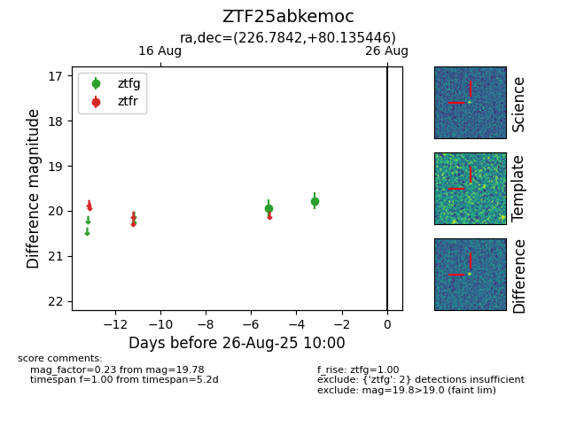

Target ZTF25abkemoc at 2025-08-26 11:55, see:
FINK: fink-portal.org/ZTF25abkemoc
Lasair: lasair-ztf.lsst.ac.uk/objects/ZTF25abkemoc
ALeRCE: alerce.online/object/ZTF25abkemoc
alt names
ZTF25abkemoc (ztf,fink)
coordinates:
equatorial (ra, dec) = (226.7842,+80.13545)
galactic (l, b) = (116.2163,+35.15284)
photometry
last ztfg=19.78
2 ztfg detections
